重塑火星
Terraforming Mars · 繁体中文规则书全文转录（转简体）
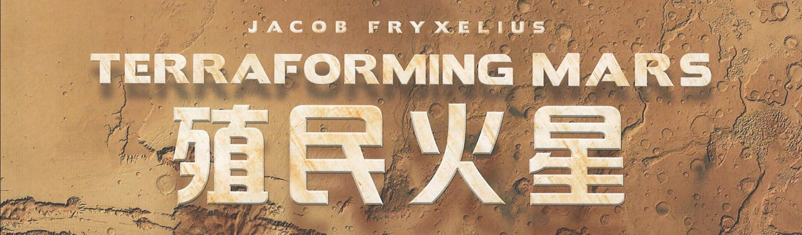
本页整理自哔哩哔哩「BGA小助手」发布的《BGA桌游规则:重塑火星(Terraforming Mars)》所载《殖民火星》繁体中文版规则书扫描图(Terraforming Mars,Jacob Fryxelius 设计,FryxGames 出版;转录时由繁体转为简体),封面横幅加内页 14 页逐页转录,原书扫描图随文嵌入——点击任意扫描页即可放大查看。内容涵盖游戏总览与星球参数、游戏图板、板块与标记、玩家板与卡牌六要素、设置、世代四阶段、七种行动(打出卡牌/标准项目/里程碑/奖励/蓝色牌行动/植物换绿化/热能升温)、游戏结束计分、游戏变体(新时代企业/单人/轮抽)与图示速查。规则内容归版权方所有,转录仅供个人学习查阅。
整理说明:扫描页经逐页放大转录、数字逐位核对与跨页衔接校验;目录所载第 16 页「配件清单」不在这份扫描中,故本页不含该节。原书排印与用字均照录:第 3 页「程碑」(漏「里」)、「变的稀薄」;第 4 页编号「5:」「6:」冒号与余条句点混用;第 7 页「道轨」「非新手家」(漏「玩」)、「移除游戏」;第 8 页「会得到 M€」一句原文留白疑有缺字、「相当」疑为「相应」;第 9/10/11 页「穿梭机」折扣触发标志三处表述不一(「钛标志」/「轨道〔?〕标志」/「太空标志」),照原样保留;第 12 页例句「计画家」与第 11 页「规划者」并存、「首先先计算」;第 12–15 页「板块/版块」全书混用;第 2 页「等..」双半角点。图板/卡牌照片中过小的印刷文字无法可靠辨认处以〔无法辨认〕或〔?〕标示。
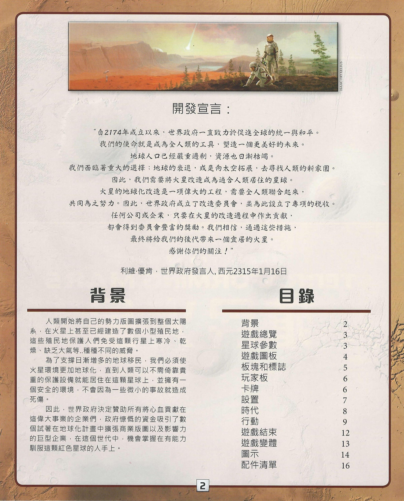
开发宣言：
“自2174年成立以来，世界政府一直致力于促进全球的统一与和平。
我们的使命就是成为全人类的工具，塑造一个更美好的未来。
地球人口已经严重过剩，资源也日渐枯竭。
我们面临着重大的选择：地球的衰退，或是向太空拓展，去寻找人类的新家园。
因此，我们需要将火星改造成为适合人类居住的星球。
火星的地球化改造是一项伟大的工程，需要全人类联合起来，
共同为之努力。因此，世界政府成立了改造委员会，并为此设立了专项的税收。
任何公司或企业，只要在火星的改造过程中作出贡献，
都会得到委员会丰富的奖励。我们相信，通过这些措施，
最终将给我们的后代带来一个宜居的火星。
感谢你们的关注！”
利维·优肯，世界政府发言人， 西元2315年1月16日
背景
人类开始将自己的势力版图扩张到整个太阳系，在火星上甚至已经建造了数个小型殖民地，这些殖民地保护人们免受这颗行星上寒冷、干燥、缺乏大气等..种种不同的威胁。
为了支撑日渐增多的地球移民，我们必须使火星环境更加地球化，直到人类可以不需倚靠贵重的保护设备就能居住在这颗星球上，并拥有一个安全的环境，不会因为一些微小的事故就造成死伤。
因此，世界政府决定赞助所有将心血贡献在这伟大事业的企业们，政府慷慨的资金吸引了数个试着在地球化计划中扩张商业版图以及影响力的巨型企业，在这个世代中，机会掌握在有能力驯服这颗红色星球的人手上。
目录
| 条目 | 页码 |
|---|---|
| 背景 | 2 |
| 游戏总览 | 3 |
| 星球参数 | 3 |
| 游戏图板 | 4 |
| 板块和标志 | 5 |
| 玩家板 | 6 |
| 卡牌 | 6 |
| 设置 | 7 |
| 时代 | 8 |
| 行动 | 9 |
| 游戏结束 | 12 |
| 游戏变体 | 13 |
| 图示 | 14 |
| 配件清单 | 16 |
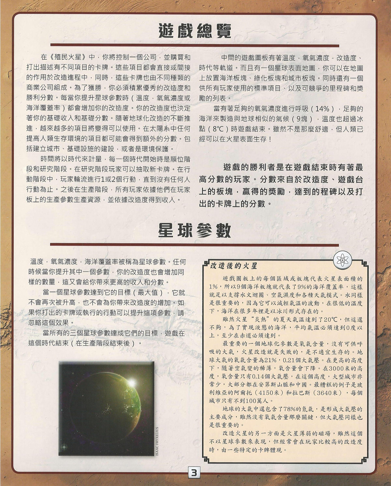
游戏总览
在《殖民火星》中，你将控制一个公司，并购买和打出描述有不同项目的卡牌。这些项目都会直接或间接的作用于改造进程中，同时，这些卡牌也由不同种类的商业公司组成。为了获胜，你必须积累优秀的改造度和胜利分数。每当你提升星球参数时（温度，氧气浓度或海洋覆盖率）都会增加你的改造度。你的改造度也决定着你的基础收入和基础分数。随着地球化改造的不断推进，越来越多的项目将变得可以使用。在太阳系中任何提高人类生存环境的项目都可能会得到额外的分数。包括建立城市、基础设施的建设，或者是环境保护。
时间将以时代来计量，每一个时代开始时是顺位阶段和研究阶段。在研究阶段玩家可以抽取新卡牌。在行动阶段中，玩家轮流进行1或2个行动，直到没有任何人行动为止。之后在生产阶段，所有玩家依据他们在玩家板上的生产参数生产资源，并依据改造度得到收入。
中间的游戏图板有着温度，氧气浓度，改造度、时代等轨道。而且有一个星球表面地图，你可以在地图上放置海洋板块、绿化板块和城市板块。同时还有一个供所有玩家使用的标准项目、以及可竞争的里程碑和奖励的列表。
当有着足够的氧气浓度进行呼吸（14%），足够的海洋来制造与地球相似的气候（9块），温度也超过冰点（8℃）时游戏结束。虽然不是那么舒适，但人类已经可以在火星表面生存！
游戏的胜利者是在游戏结束时有着最高分数的玩家。分数来自于改造度、游戏台上的板块，赢得的奖励，达到的程碑以及打出的卡牌上的分数。
星球参数
温度，氧气浓度，海洋覆盖率被称为星球参数。任何时候当你提升其中一个参数，你的改造度也会增加同样的数量，这又会给你带来更高的收入和分数。
当一个星球参数达到它的目标（最大值），它就不会再次被升高，也不会为你带来改造度的增加。如果你打出的卡牌或执行的行动可以提升这项参数，请忽略这个效果。
当所有的三个星球参数达成它们的目标，游戏在这个时代结束（在生产阶段结束后）。
〔图右栏带边框的侧栏专栏，框角饰有原子图标，标题为「改造后的火星」〕
改造后的火星
游戏图板上的每个区域或板块代表火星表面积的1%，所以9个海洋板块就代表了9%的海洋覆盖率，这样就足以支撑水文回圈、空气湿度和各种天气模式。水同样是很重要的，因为它可以减轻气温的波动，在很低的温度下，海洋在很多年里是以冰川形式存在的。
虽然火星“炎热”的夏天气温达到了20℃，但这还不够，为了实现液态的海洋，平均气温必须达到0度以上，至少在赤道必须达到。
最重要的一个地球化参数是氧气含量，没有可供呼吸的大气，火星改造就是失败的，是不适宜生存的。地球大气的氧气含量为21%，0.21个大气压。在更高的高度下，随着空气变的稀薄，氧含量会下降。在3000米的高度，氧含量只有0.14个大气压，在这个高度，大型城市非常少，大部分都在安第斯山脉和中国。最糟糕的例子是玻利维亚的阿尔托（4150米）和拉巴斯（3640米），每个城市只有不到100万人。
地球的大气中还包含了78%的氮气，是形成大气压的主要成分，虽然没有氧气含量那么关键，但大气压同样也是很重要的。
改造火星的另一方面是火星薄弱的磁场，虽然这个不以星球参数来表现，但经常会在玩家比较高的改造度时，由一些特定的卡牌体现。
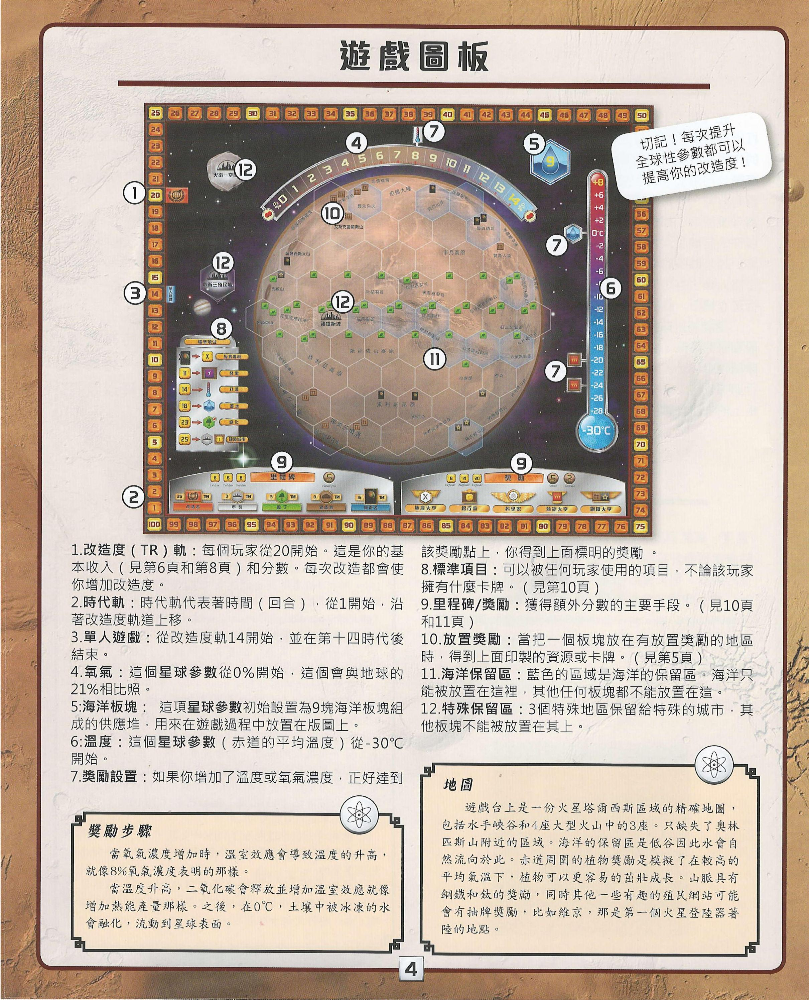
游戏图板
〔图游戏图板整页照片，板上印有1–12号白圈编号标注，对应下列说明;右上角白框注：切记!每次提升全球性参数都可以提高你的改造度!图板四周为改造度轨数字：顶部自左至右25–50、左侧自下而上1–24、底部自左至右100–75、右侧自上而下可见56–59及70–75。图板左侧"标准项目"面板(标注8)各行为：卡片/X→X，名称〔无法辨认〕(4字);11→电力图标，名称〔无法辨认〕(2字);14→温度计图标，名称"升温";18→海洋图标，名称〔无法辨认〕(2字);23→植被图标，名称"绿化";25→城市图标+1分标记，名称"建造城市"。图板底部左为"里程碑"面板(标注9):顶部三枚标"8"的小方块(下方小字英文〔无法辨认〕)及一枚圆形"5"标记，五块里程碑牌编号35、3、3、8、16(均带"TM"字样)，牌名仅"市长""园丁"可以辨认，其余三块〔无法辨认〕;底部右为"奖励"面板(标注9):顶部三枚标"8""14""20"的小方块(下方小字英文〔无法辨认〕)及"5""2"两枚圆形标记，五块奖励牌名：地产大亨、银行家、科学家、热能大亨、〔无法辨认〕大亨。地图照片上另印有火星地名(如"诺提斯城""艾斯克雷尔斯山""坦积大陆")与小奖励图标，其余过小无法可靠辨认。〕
1.改造度(TR)轨:每个玩家从20开始。这是你的基本收入(见第6页和第8页)和分数。每次改造都会使你增加改造度。
2.时代轨:时代轨代表着时间(回合)，从1开始，沿着改造度轨道上移。
3.单人游戏:从改造度轨14开始，并在第十四时代后结束。
4.氧气:这个星球参数从0%开始，这个会与地球的21%相比照。
5:海洋板块:这项星球参数初始设置为9块海洋板块组成的供应堆，用来在游戏过程中放置在版图上。
6:温度:这个星球参数(赤道的平均温度)从-30℃开始。
7.奖励设置:如果你增加了温度或氧气浓度，正好达到该奖励点上，你得到上面标明的奖励。
8.标准项目:可以被任何玩家使用的项目，不论该玩家拥有什么卡牌。(见第10页)
9.里程碑/奖励:获得额外分数的主要手段。(见10页和11页)
10.放置奖励:当把一个板块放在有放置奖励的地区时，得到上面印制的资源或卡牌。(见第5页)
11.海洋保留区:蓝色的区域是海洋的保留区。海洋只能被放置在这里，其他任何板块都不能放置在这。
12.特殊保留区:3个特殊地区保留给特殊的城市，其他板块不能被放置在其上。
奖励步骤
当氧气浓度增加时，温室效应会导致温度的升高，就像8%氧气浓度表明的那样。
当温度升高，二氧化碳会释放并增加温室效应就像增加热能产量那样。之后，在0℃，土壤中被冰冻的水会融化，流动到星球表面。
地图
游戏台上是一份火星塔尔西斯区域的精确地图，包括水手峡谷和4座大型火山中的3座。只缺失了奥林匹斯山附近的区域。海洋的保留区是低谷因此水会自然流向于此。赤道周围的植物奖励是模拟了在较高的平均气温下，植物可以更容易的茁壮成长。山脉具有钢铁和钛的奖励，同时其他一些有趣的殖民网站可能会有抽牌奖励，比如维京，那是第一个火星登陆器着陆的地点。
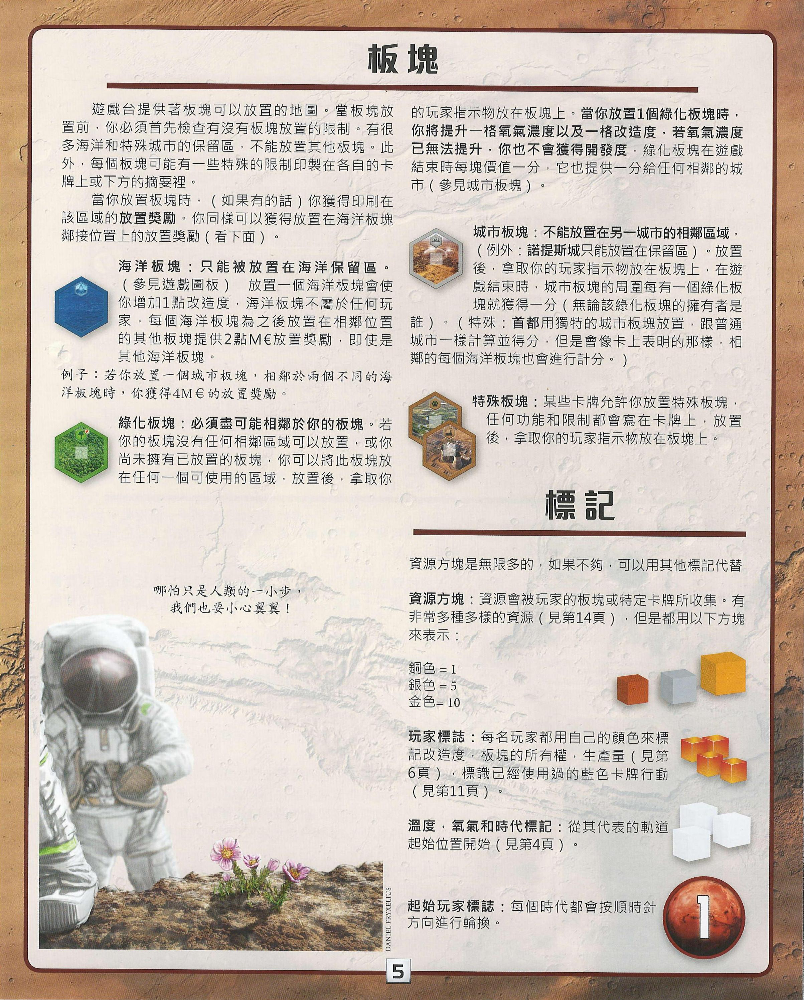
板块
游戏台提供着板块可以放置的地图。当板块放置前，你必须首先检查有没有板块放置的限制。有很多海洋和特殊城市的保留区，不能放置其他板块。此外，每个板块可能有一些特殊的限制印制在各自的卡牌上或下方的摘要里。
当你放置板块时，(如果有的话)你获得印刷在该区域的放置奖励。你同样可以获得放置在海洋板块邻接位置上的放置奖励(看下面)。
〔图蓝色海洋板块六边形照片，上有水滴图标〕
海洋板块:只能被放置在海洋保留区。(参见游戏图板) 放置一个海洋板块会使你增加1点改造度，海洋板块不属于任何玩家，每个海洋板块为之后放置在相邻位置的其他板块提供2点M€放置奖励，即使是其他海洋板块。
例子：若你放置一个城市板块，相邻于两个不同的海洋板块时，你获得4M€的放置奖励。
〔图绿色植被板块六边形照片，上有树木图标〕
绿化板块:必须尽可能相邻于你的板块。若你的板块没有任何相邻区域可以放置，或你尚未拥有已放置的板块，你可以将此板块放在任何一个可使用的区域，放置后，拿取你的玩家指示物放在板块上。当你放置1个绿化板块时，你将提升一格氧气浓度以及一格改造度，若氧气浓度已无法提升，你也不会获得开发度，绿化板块在游戏结束时每块价值一分，它也提供一分给任何相邻的城市(参见城市板块)。
〔图城市板块六边形照片，灰白色城市图案〕
城市板块:不能放置在另一城市的相邻区域，(例外：诺提斯城只能放置在保留区)。放置后，拿取你的玩家指示物放在板块上，在游戏结束时，城市板块的周围每有一个绿化板块就获得一分(无论该绿化板块的拥有者是谁)。(特殊：首都用独特的城市板块放置，跟普通城市一样计算并得分，但是会像卡上表明的那样，相邻的每个海洋板块也会进行计分。)
〔图两块棕色特殊板块六边形照片(自然保留区与工业城市图案，各带图标)〕
特殊板块:某些卡牌允许你放置特殊板块，任何功能和限制都会写在卡牌上，放置后，拿取你的玩家指示物放在板块上。
标记
资源方块是无限多的，如果不够，可以用其他标记代替。
资源方块:资源会被玩家的板块或特定卡牌所收集。有非常多种多样的资源(见第14页)，但是都用以下方块来表示：
铜色=1
银色=5
金色=10
〔图铜色、银色、金色三枚资源方块照片，大小依1/5/10递增〕
〔图橙红色玩家标记方块照片(数枚)〕
玩家标志:每名玩家都用自己的颜色来标记改造度，板块的所有权，生产量(见第6页)，标识已经使用过的蓝色卡牌行动(见第11页)。
〔图白色立方标记照片〕
温度，氧气和时代标记:从其代表的轨道起始位置开始(见第4页)。
〔图红色圆形起始玩家标记照片，上有火星图案与数字"1"〕
起始玩家标志:每个时代都会按顺时针方向进行轮换。
〔图宇航员照片配文：哪怕只是人类的一小步，我们也要小心翼翼!〕
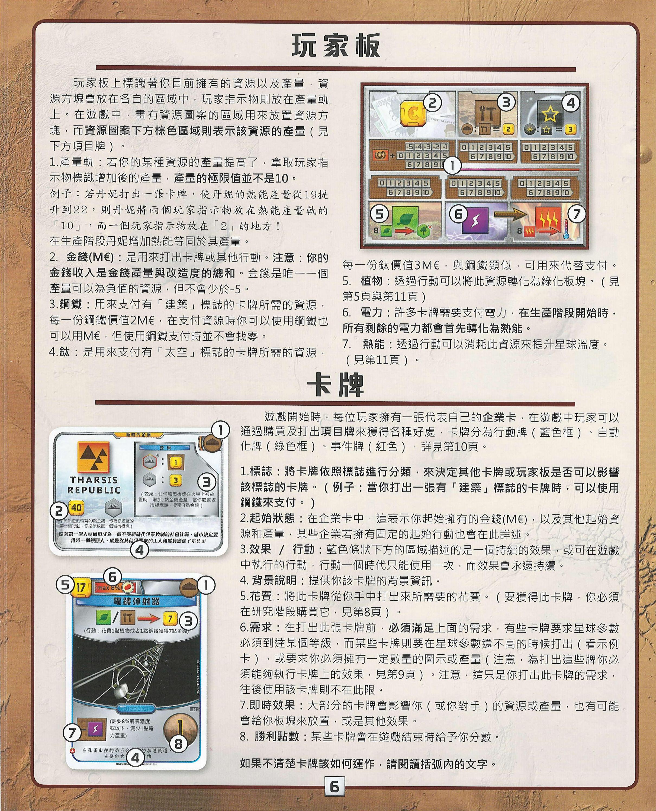
玩家板
玩家板上标识着你目前拥有的资源以及产量，资源方块会放在各自的区域中，玩家指示物则放在产量轨上。在游戏中，画有资源图案的区域用来放置资源方块，而资源图案下方棕色区域则表示该资源的产量(见下方项目牌)。
1. 产量轨:若你的某种资源的产量提高了，拿取玩家指示物标识增加后的产量，产量的极限值并不是10。
例子：若丹妮打出一张卡牌，使丹妮的热能产量从19提升到22，则丹妮将两个玩家指示物放在热能产量轨的「10」，而一个玩家指示物放在「2」的地方!
在生产阶段丹妮增加热能等同于其产量。
2. 金钱(M€):是用来打出卡牌或其他行动。注意：你的金钱收入是金钱产量与改造度的总和。金钱是唯一一个产量可以为负值的资源，但不会少于-5。
3. 钢铁:用来支付有「建筑」标志的卡牌所需的资源，每一份钢铁价值2M€，在支付资源时你可以使用钢铁也可以用M€，但使用钢铁支付时并不会找零。
4. 钛:用来支付有「太空」标志的卡牌所需的资源，每一份钛价值3M€，与钢铁类似，可用来代替支付。
5. 植物:透过行动可以将此资源转化为绿化板块。(见第5页与第11页)
6. 电力:许多卡牌需要支付电力，在生产阶段开始时，所有剩余的电力都会首先转化为热能。
7. 热能:透过行动可以消耗此资源来提升星球温度。(见第11页)。
〔图玩家板照片，圈注①—⑦与上文七项对应：①产量轨(金钱轨为-5至-1、+0至5、6至10，旁有联合国图标「+」;钢铁、钛、植物、电力、热能各轨为0至10);②金钱(M€)资源区;③钢铁资源区，下方标注「M€:钢铁=2」;④钛资源区，下方标注「M€:钛=3」;⑤植物资源区，下方标注「8〔植物图标〕→〔绿化板块图标〕」;⑥电力资源区;⑦热能资源区，下方标注「8〔热能图标〕→〔温度计图标〕」〕
卡牌
游戏开始时，每位玩家拥有一张代表自己的企业卡，在游戏中玩家可以通过购买及打出项目牌来获得各种好处，卡牌分为行动牌(蓝色框)、自动化牌(绿色框)、事件牌(红色)，详见第10页。
1. 标志:将卡牌依照标志进行分类，来决定其他卡牌或玩家板是否可以影响该标志的卡牌。(例子：当你打出一张有「建筑」标志的卡牌时，可以使用钢铁来支付。)
2. 起始状态:在企业卡中，这表示你起始拥有的金钱(M€)，以及其他起始资源和产量，某些企业若拥有固定的起始行动也会在此详述。
3. 效果 / 行动:蓝色条状下方的区域描述的是一个持续的效果，或可在游戏中执行的行动，行动一个时代只能使用一次，而效果会永远持续。
4. 背景说明:提供你该卡牌的背景资讯。
5. 花费:将此卡牌从你手中打出来所需要的花费。(要获得此卡牌，你必须在研究阶段购买它，见第8页)。
6. 需求:在打出此张卡牌前，必须满足上面的需求，有些卡牌要求星球参数必须到达某个等级，而某些卡牌则要在星球参数还不高的时候打出(看示例卡)，或要求你必须拥有一定数量的图示或产量(注意，为打出这些牌你必须能够执行卡牌上的效果，见第9页)。注意，这只是你打出此卡牌的需求，往后使用该卡牌则不在此限。
7. 即时效果:大部分的卡牌会影响你(或你对手)的资源或产量，也有可能会给你板块来放置，或是其他效果。
8. 胜利点数:某些卡牌会在游戏结束时给予你分数。
如果不清楚卡牌该如何运作，请阅读括弧内的文字。
〔图企业卡示例「THARSIS REPUBLIC」，顶部黄底横幅「新时代企业」：①指卡右上角棕色标志图标;②指起始金钱方块「40」，其下小字：(开始游戏时有40点金钱，作为你游戏的第一个行动，你必须放置一个城市板块);③指蓝色「效果」栏，栏内图示：〔城市板块图标〕*:1、〔城市板块图标〕：3，下方小字：(效果：任何城市板块在火星上被放置时，增加1点金钱产量，当你放置城市板块时，得到3点金钱);④指底部背景说明文字：随着第一个大型城市成为一个不受新时代企业控制的社会社区，城市决定要推举一个领头人，于是从其他〔企?〕业来的工人和雇员创建了本公司〕
〔图项目牌示例「电镀弹射器」，蓝色框，右上角标「max 8%」附氧气图标：①指卡右上角棕色标志图标;⑤指费用方块「17」;⑥指需求栏「max 8%」及氧气图标;③指行动图示〔植物〕/〔钢铁〕→〔7〕，下方小字：(行动：花费1点植物或者1点钢铁获得7点金钱);⑦指即时效果图示「-〔电力图标〕」，旁注：(需要8%氧气浓度或以下，减少1点电力产量);⑧指胜利点数图标「1」;④指底部背景说明文字：在孔雀山里的两百公〔?〕的加速轨道，主要向太〔?〕〔?〕物。卡号069〕
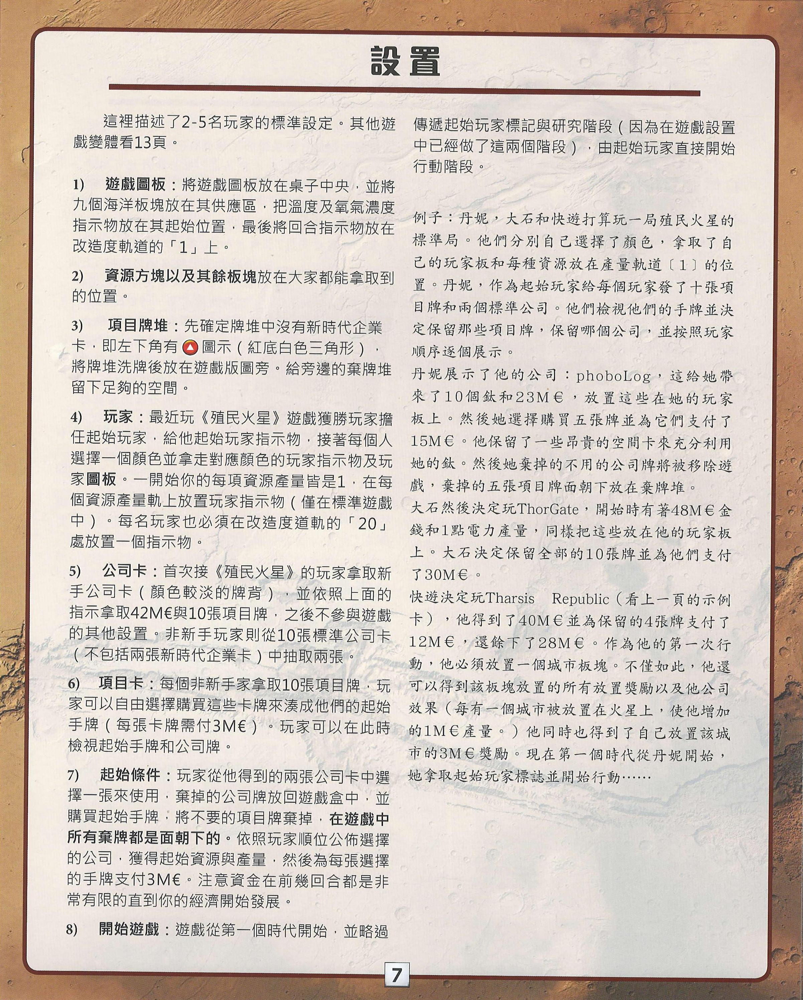
设置
这里描述了2-5名玩家的标准设定。其他游戏变体看13页。
1) 游戏图板:将游戏图板放在桌子中央，并将九个海洋板块放在其供应区，把温度及氧气浓度指示物放在其起始位置，最后将回合指示物放在改造度轨道的「1」上。
2) 资源方块以及其余板块放在大家都能拿取到的位置。
3) 项目牌堆:先确定牌堆中没有新时代企业卡，即左下角有〔红底白色三角形图标〕图示(红底白色三角形)，将牌堆洗牌后放在游戏版图旁。给旁边的弃牌堆留下足够的空间。
4) 玩家:最近玩《殖民火星》游戏获胜玩家担任起始玩家，给他起始玩家指示物，接着每个人选择一个颜色并拿走对应颜色的玩家指示物及玩家图板。一开始你的每项资源产量皆是1，在每个资源产量轨上放置玩家指示物(仅在标准游戏中)。每名玩家也必须在改造度道轨的「20」处放置一个指示物。
5) 公司卡:首次接《殖民火星》的玩家拿取新手公司卡(颜色较淡的牌背)，并依照上面的指示拿取42M€与10张项目牌，之后不参与游戏的其他设置。非新手玩家则从10张标准公司卡(不包括两张新时代企业卡)中抽取两张。
6) 项目卡:每个非新手家拿取10张项目牌，玩家可以自由选择购买这些卡牌来凑成他们的起始手牌(每张卡牌需付3M€)。玩家可以在此时检视起始手牌和公司牌。
7) 起始条件:玩家从他得到的两张公司卡中选择一张来使用，弃掉的公司牌放回游戏盒中，并购买起始手牌，将不要的项目牌弃掉，在游戏中所有弃牌都是面朝下的。依照玩家顺位公布选择的公司，获得起始资源与产量，然后为每张选择的手牌支付3M€。注意资金在前几回合都是非常有限的直到你的经济开始发展。
8) 开始游戏:游戏从第一个时代开始，并略过传递起始玩家标记与研究阶段(因为在游戏设置中已经做了这两个阶段)，由起始玩家直接开始行动阶段。
例子：丹妮，大石和快游打算玩一局殖民火星的标准局。他们分别自己选择了颜色，拿取了自己的玩家板和每种资源放在产量轨道「1」的位置。丹妮，作为起始玩家给每个玩家发了十张项目牌和两个标准公司。他们检视他们的手牌并决定保留那些项目牌，保留哪个公司，并按照玩家顺序逐个展示。
丹妮展示了他的公司：phoboLog，这给她带来了10个钛和23M€，放置这些在她的玩家板上。然后她选择购买五张牌并为它们支付了15M€。他保留了一些昂贵的空间卡来充分利用她的钛。然后她弃掉的不用的公司牌将被移除游戏，弃掉的五张项目牌面朝下放在弃牌堆。
大石然后决定玩ThorGate，开始时有着48M€金钱和1点电力产量，同样把这些放在他的玩家板上。大石决定保留全部的10张牌并为他们支付了30M€。
快游决定玩Tharsis Republic(看上一页的示例卡)，他得到了40M€并为保留的4张牌支付了12M€，还余下了28M€。作为他的第一次行动，他必须放置一个城市板块。不仅如此，他还可以得到该板块放置的所有放置奖励以及他公司效果(每有一个城市被放置在火星上，使他增加的1M€产量。)他同时也得到了自己放置该城市的3M€奖励。现在第一个时代从丹妮开始，她拿取起始玩家标志并开始行动……
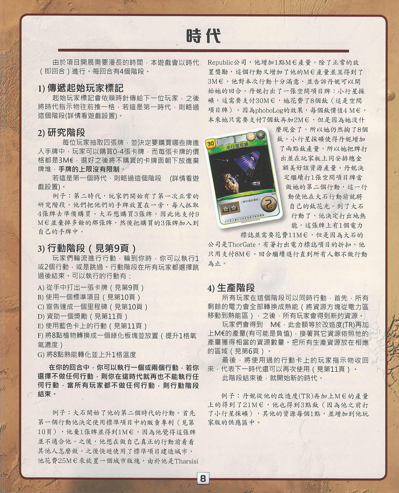
时代
由于项目开展需要漫长的时间，本游戏会以时代(即回合)进行。每回合有4个阶段。
1) 传递起始玩家标记
起始玩家标记会依顺时针传给下一位玩家，之后将时代指示物往前推一格，若这是第一时代，则略过这个阶段(详情看游戏设置)。
2) 研究阶段
每位玩家抽取四张牌，并决定要购买哪些牌进入手牌中，玩家可以购买0-4张卡牌，而每张卡牌的价格都是3M€，选好之后将不购买的卡牌面朝下放进弃牌堆，手牌的上限没有限制。
若这是第一个时代，则略过这个阶段 (详情看游戏设置)。
例子：第二时代，玩家们开始有了第一次正常的研究阶段。他们把他们的手牌放置在一旁，每人抓取4张牌去准备购买。大石想购买3张牌，因此他支付9M€并弃掉多余的那张牌，然后把购买的3张牌加入到自己的手牌中。
3) 行动阶段(见第9页)
玩家们轮流进行行动，轮到你时，你可以执行1或2个行动，或是跳过。行动阶段在所有玩家都选择跳过后结束。可以执行的行动有：
A)从手中打出一张卡牌(见第9页)
B)使用一个标准项目(见第10页)
C)宣告达成一个里程碑(见第10页)
D)资助一个奖励(见第11页)
E)使用蓝色卡上的行动(见第11页)
F)将8点植物转换成一个绿化板块并放置(提升1格氧气浓度)
G)将8点热能转化并上升1格温度
在你的回合中，你可以执行一个或两个行动，若你选择不做任何行动，则你在这时代就再也不能执行任何行动，当所有玩家都不做任何行动，则行动阶段结束。
例子：大石开始了他的第二个时代的行动。首先第一个行动他决定使用标准项目中的贩卖专利(见第10页)，他弃1张牌并得到1M€，因为他觉得这张牌并不适合他。之后，他想在做自己真正的行动前看看其他人怎么做。之后快游使用了标准项目建造城市，他花费25M€来放置一个城市板块，由于他是Tharsisi Republic公司，他增加1点M€产量。除了正常的放置奖励，这个行动又增加了他的M€产量并且得到了3M€。他对本次行动十分满意，并告诉丹妮可以开始她的回合。丹妮打出了一张空间项目牌：小行星采矿，这需要支付30M€，她花费了8个钛(这是空间项目牌)。因为phoboLog的效果，每个钛价值4 M€，本来她只需要支付7个钛再加2M€，但是因为她没什么现金了，所以她仍然掏了8个钛。
〔图绿色项目卡牌"小行星采矿"，费用30，卡上写"(增加2点钛产能)",2分，卡底小字"小行星上重力小并且有很多稀有矿物"(此卡插印于本例段落中间)〕
小行星采矿使得丹妮增加了两点钛产量，所以她把牌打出并在玩家板上同安排总金额美好该资源产量。丹妮决定继续打1张空间项目牌当做她的第二个行动，这一行动使他在大石行动前就将自己的钛花光。到了大石行动了，他决定打出地热能，这张牌上有1个电力标志并需要花费11M€，但是因为大石的公司是ThorGate，有着打出电力标志项目的折扣，他只用支付8M€。回合继续进行直到所有人都不做行动为止。
4) 生产阶段
所有玩家在这个阶段可以同时行动，首先，所有剩余的电力会全部转换成热能(将资源方块从电力区移动到热能区)，之后，所有玩家会得到新的资源。
玩家们会得到 M€〔原文"得到"与"M€"之间留有空白，似有缺字〕，此金额等于改造度(TR)再加上M€的产量(有可能是负值)，接着其它资源依照他的产量获得相当〔原文如此，疑为"相应"〕的资源数量。把所有生产资源放在相应的区域(见第6页)。
最后，将使用过的行动卡上的玩家指示物收回来，代表下一时代还可以再次使用(见第11页)。
此阶段结束后，就开始新的时代。
例子：丹妮从他的改造度(TR)再加上M€的产量上的得到了21M€，他也得到3点钛(因为他之前打了小行星采矿)，其他的资源每个1点，并增加到他玩家版的供应区中。
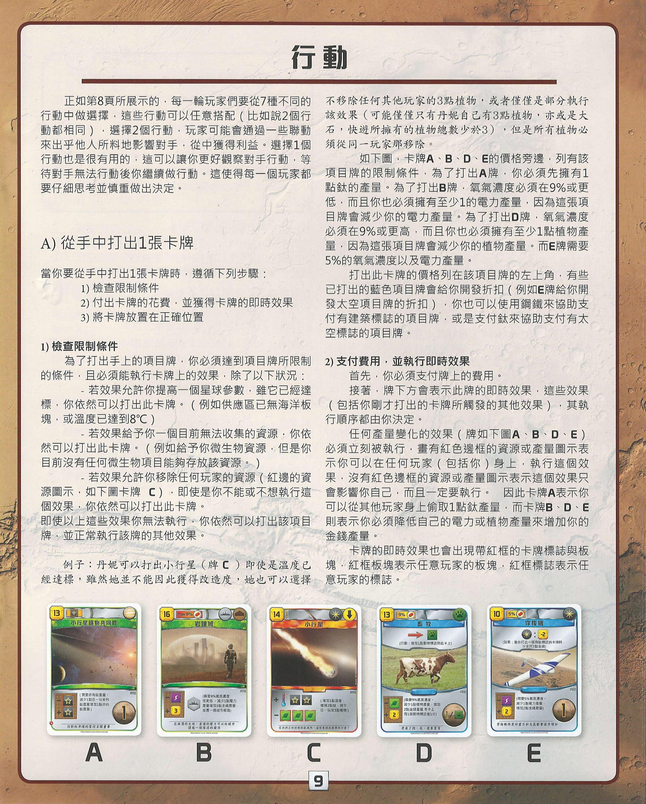
行动
正如第8页所展示的，每一轮玩家们要从7种不同的行动中做选择，这些行动可以任意搭配(比如说2个行动都相同)，选择2个行动，玩家可能会通过一些联动来出乎他人所料地影响对手，从中获得利益。选择1个行动也是很有用的，这可以让你更好观察对手行动，等待对手无法行动后你继续做行动。这使得每一个玩家都要仔细思考并慎重做出决定。
A) 从手中打出1张卡牌
当你要从手中打出1张卡牌时，遵循下列步骤：
1) 检查限制条件
2) 付出卡牌的花费，并获得卡牌的即时效果
3) 将卡牌放置在正确位置
1) 检查限制条件
为了打出手上的项目牌，你必须达到项目牌所限制的条件，且必须能执行卡牌上的效果，除了以下状况：
- 若效果允许你提高一个星球参数，虽它已经达标，你依然可以打出此卡牌。(例如供应区已无海洋板块，或温度已达到8℃)
- 若效果给予你一个目前无法收集的资源，你依然可以打出此卡牌。(例如给予你微生物资源，但是你目前没有任何微生物项目能够存放该资源。)
- 若效果允许你移除任何玩家的资源(红边的资源图示，如下图卡牌 C)，即使是你不能或不想执行这个效果，你依然可以打出此卡牌。
即使以上这些效果你无法执行，你依然可以打出该项目牌，并正常执行该牌的其他效果。
例子：丹妮可以打出小行星(牌 C)即使是温度已经达标，虽然她并不能因此获得改造度，她也可以选择不移除任何其他玩家的3点植物，或者仅仅是部分执行该效果(可能仅仅只有丹妮自己有3点植物，亦或是大石，快游所拥有的植物总数少于3)，但是所有植物必须从同一玩家那移除。
如下图，卡牌A、B、D、E的价格旁边，列有该项目牌的限制条件，为了打出A牌，你必须先拥有1点钛的产量。为了打出B牌，氧气浓度必须在9%或更低，而且你也必须拥有至少1的电力产量，因为这张项目牌会减少你的电力产量。为了打出D牌，氧气浓度必须在9%或更高，而且你也必须拥有至少1点植物产量，因为这张项目牌会减少你的植物产量。而E牌需要5%的氧气浓度以及电力产量。
打出此卡牌的价格列在该项目牌的左上角，有些已打出的蓝色项目牌会给你开发折扣(例如E牌给你开发太空项目牌的折扣)，你也可以使用钢铁来协助支付有建筑标志的项目牌，或是支付钛来协助支付有太空标志的项目牌。
2) 支付费用，并执行即时效果
首先，你必须支付牌上的费用。
接着，牌下方会表示此牌的即时效果，这些效果(包括你刚才打出的卡牌所触发的其他效果)，其执行顺序都由你决定。
任何产量变化的效果(牌如下图A、B、D、E)必须立刻被执行，画有红色边框的资源或产量图示表示你可以在任何玩家(包括你)身上，执行这个效果，没有红色边框的资源或产量图示表示这个效果只会影响你自己，而且一定要执行。因此卡牌A表示你可以从其他玩家身上偷取1点钛产量，而卡牌B、D、E则表示你必须降低自己的电力或植物产量来增加你的金钱产量。
卡牌的即时效果也会出现带红框的卡牌标志与板块，红框板块表示任意玩家的板块，红框标志表示任意玩家的标志。
〔图页底横排5张示例卡牌，下方标字母 A B C D E，卡面文字转录如下〕
- A "小行星矿物共同体"(费用13,1分):"(需要你有钛产量，减少1点任一玩家的钛产量增加1点你的钛产量)";卡底斜体小字："你对钛市场的掌控至关重要"。
- B "岩钟城"(费用16，限制"max 9%"):"(需要9%氧气浓度或更低，减少1点电力产量增加3点金钱产量，放置一个城市板块)";分数处为城市图标;卡底斜体小字："在稀薄的大地，昂贵的压力可以给城市撑起一个保护的圆顶"。
- C "小行星"(费用14):"(增加1点温度，获得2点钛，减少任一玩家3点植物)"(图示：+温度、2颗星，−3个带红框的植物);卡底斜体小字："在我们已经控制的区域内，这些星球对我意味什么?"。
- D "畜牧"(费用13，限制"9%"):"(行动：增加1点动物标志到此卡上)";"(需要9%氧气浓度，减少1点植物产量，增加2点金钱产量，本卡上每1个动物标志值1分)";分数处为"1/动物标志";卡底斜体小字："带来了肉、毛、皮革等等"。
- E "穿梭机"(费用10，限制"5%"):"(太空标志图标):−2","(效果：当你打出一张有钛标志的卡牌时，少支付2点金钱)";"(需要5%氧气浓度，减少1点电力产量，增加2点金钱产量)",1分;卡底斜体小字："穿梭机降落时重力和大气都会逐步增加"。
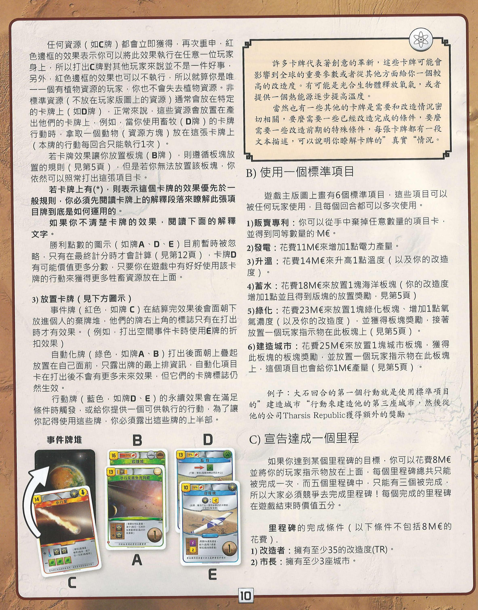
任何资源(如C牌)都会立即获得，再次重申，红色边框的效果表示你可以将此效果执行在任意一位玩家身上，所以打出C牌对其他玩家来说并不是一件好事，另外，红色边框的效果也可以不执行，所以就算你是唯一一个有植物资源的玩家，你也不会失去植物资源。非标准资源(不放在玩家版图上的资源)通常会放在特定的卡牌上(如D牌)，正常来说，这些资源会放置在产出他们的卡牌上，例如，当你使用畜牧(D牌)的卡牌行动时，拿取一个动物(资源方块)放在这张卡牌上(本牌的行动每回合只能执行1次)。
若卡牌效果让你放置板块(B牌)，则遵循板块放置的规则(见第5页)，但是若你无法放置该板块，你依然可以照常打出这张项目卡。
若卡牌上有(*)，则表示这个卡牌的效果优先于一般规则，你必须先阅读卡牌上的解释段落来了解此张项目牌到底是如何运用的。
如果你不清楚卡牌的效果，阅读下面的解释文字。
胜利点数的图示(如牌A、D、E)目前暂时被忽略，只有在最终计分时才会计算(见第12页)，卡牌D有可能价值更多分数，只要你在游戏中有好好使用该卡牌的行动来获得更多牲畜资源放在上面。
3)放置卡牌(见下方图示)
事件牌(红色，如牌C)在结算完效果后会面朝下放进个人的弃牌堆，他们的牌右上角的标志只有在打出时才有效果。(例如，打出空间事件卡时使用E牌的折扣效果)。
自动化牌(绿色，如牌A、B)打出后面朝上叠起放置在自己面前，只露出牌的最上排资讯，自动化项目卡在打出后不会有更多未来效果，但它们的卡牌标志仍然生效。
行动牌(蓝色，如牌D、E)的永续效果会在满足条件时触发，或给你提供一个可供执行的行动，为了让你记得使用这些牌，你必须露出这些牌的上半部。
〔图「事件牌堆」图示——一张面朝下的事件牌(背面为火星图案)，箭头示意将其放入牌堆;牌C「小行星」(费用14，红色事件牌)斜放在牌堆上，效果小字"(增加1点温度，获得2点钛，减少任一玩家3点植物)"，牌底还有一行斜体小字〔无法辨认〕;牌B「岩缝城」(费用16，绿色自动化牌，上半部叠在牌堆最上方);牌A「小行星矿物共同体」(费用13，绿色自动化牌，木星标志，产量框-1钛/+1钛，效果"(需要你有钛产量，减少1点任一玩家的钛产量增加1点你的钛产量)"，胜利分1，斜体小字"你对钛市场的掌握更趋重要");牌D「畜牧」(费用13，蓝色行动牌，动物标志，效果"(行动：增加1点动物标记到这张卡上)");牌E「穿梭机」(费用10，蓝色行动牌，效果框"(效果：当你打出一张有轨道〔?〕标志的卡牌时，少支付2点金钱)"，产量框-1电力/+2金钱，"(需要5%氧气〔?〕度，减少1点电力产量，增加2点金钱产量)"，胜利分1，斜体小字"穿梭机降落时重力和大气都会逐步增加")〕
许多卡牌代表着创意的革新，这些卡牌可能会影响到全球的重要参数或者从其他方面给你一个较高的改造度。有可能是光合生物体释放氧气，或者提供一个热能源逐步提高温度。
当然也有一些其他的卡牌是需要和改造情况密切相关，要么需要一些已经改造完成的条件，要么需要一些改造前期的特殊条件，每张卡牌都有一段文本描述，可以说明你了解卡牌的"真实"情况。
B)使用一个标准项目
游戏主版图上画有6个标准项目，这些项目可以被任何玩家使用，且每个回合都可以多次使用。
1)贩卖专利:你可以从手中弃掉任意数量的项目卡，并得到同等数量的M€。
2)发电:花费11M€来增加1点电力产量。
3)升温:花费14M€来升高1点温度(以及你的改造度)。
4)蓄水:花费18M€来放置1块海洋板块(你的改造度增加1点并且得到版块的放置奖励，见第5页)
5)绿化:花费23M€来放置1块绿化板块、增加1点氧气浓度(以及你的改造度)，并获得板块奖励，接着放置一个玩家指示物在此板块上(见第5页)。
6)建造城市:花费25M€来放置1块城市板块，获得此板块的板块奖励，并放置一个玩家指示物在此板块上，这个项目也会给你1M€产量(见第5页)。
例子：大石回合的第一个行动就是使用标准项目的"建造城市"行动来建造他的第三座城市，然后从他的公司Tharsis Republic获得额外的奖励。
C)宣告达成一个里程碑
如果你达到某个里程碑的目标，你可以花费8M€并将你的玩家指示物放在上面，每个里程碑总共只能被完成一次，而五个里程碑中，只能有三个被完成，所以大家必须竞争去完成里程碑!每个完成的里程碑在游戏结束时价值五分。
里程碑的完成条件(以下条件不包括8M€的花费):
1)改造者:拥有至少35的改造度(TR)。
2)市长:拥有至少3座城市。
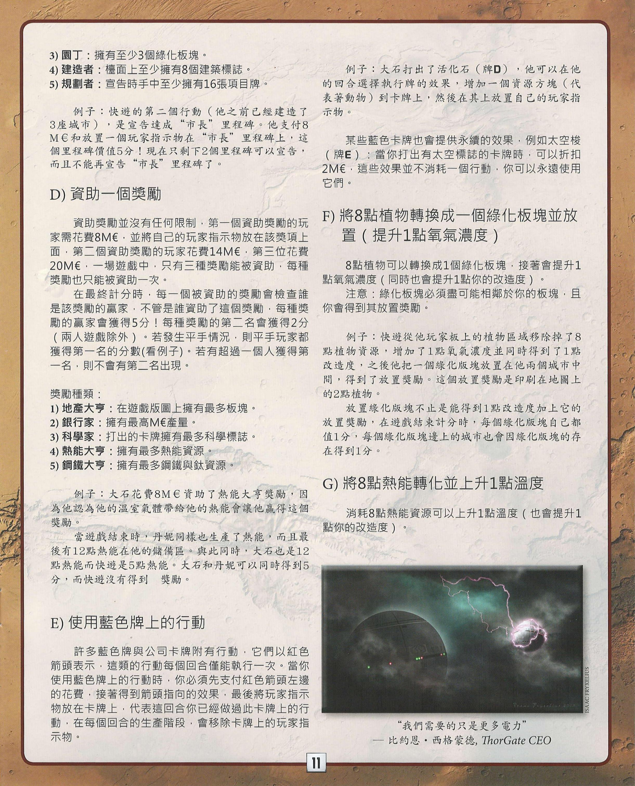
3)园丁:拥有至少3个绿化板块。
4)建造者:台面上至少拥有8个建筑标志。
5)规划者:宣告时手中至少拥有16张项目牌。
例子：快游的第二个行动(他之前已经建造了3座城市)，是宣告达成"市长"里程碑。他支付8M€和放置一个玩家指示物在"市长"里程碑上，这个里程碑价值5分!现在只剩下2个里程碑可以宣告，而且不能再宣告"市长"里程碑了。
D)资助一个奖励
资助奖励并没有任何限制，第一个资助奖励的玩家需花费8M€，并将自己的玩家指示物放在该奖项上面，第二个资助奖励的玩家花费14M€，第三位花费20M€，一场游戏中，只有三种奖励能被资助，每种奖励也只能被资助一次。
在最终计分时，每一个被资助的奖励会检查谁是该奖励的赢家，不管是谁资助了这个奖励，每种奖励的赢家会获得5分!每种奖励的第二名会获得2分(两人游戏除外)。若发生平手情况，则平手玩家都获得第一名的分数(看例子)。若有超过一个人获得第一名，则不会有第二名出现。
奖励种类：
1)地产大亨:在游戏版图上拥有最多板块。
2)银行家:拥有最高M€产量。
3)科学家:打出的卡牌拥有最多科学标志。
4)热能大亨:拥有最多热能资源。
5)钢铁大亨:拥有最多钢铁与钛资源。
例子：大石花费8M€资助了热能大亨奖励，因为他认为他的温室气体带给他的热能会让他赢得这个奖励。
当游戏结束时，丹妮同样也生产了热能，而且最后有12点热能在他的储备区。与此同时，大石也是12点热能而快游是5点热能。大石和丹妮可以同时得到5分，而快游没有得到奖励。
E)使用蓝色牌上的行动
许多蓝色牌与公司卡牌附有行动，它们以红色箭头表示，这类的行动每个回合仅能执行一次。当你使用蓝色牌上的行动时，你必须先支付红色箭头左边的花费，接着得到箭头指向的效果，最后将玩家指示物放在卡牌上，代表这回合你已经做过此卡牌上的行动，在每个回合的生产阶段，会移除卡牌上的玩家指示物。
例子：大石打出了活化石(牌D)，他可以在他的回合选择执行牌的效果，增加一个资源方块(代表着动物)到卡牌上，然后在其上放置自己的玩家指示物。
某些蓝色卡牌也会提供永续的效果，例如太空梭(牌E):当你打出有太空标志的卡牌时，可以折扣2M€，这些效果并不消耗一个行动，你可以永远使用它们。
F)将8点植物转换成一个绿化板块并放置(提升1点氧气浓度)
8点植物可以转换成1个绿化板块，接着会提升1点氧气浓度(同时也会提升1点你的改造度)。
注意：绿化板块必须尽可能相邻于你的板块，且你会得到其放置奖励。
例子：快游从他玩家板上的植物区域移除掉了8点植物资源，增加了1点氧气浓度并同时得到了1点改造度，之后他把一个绿化版块放置在他两个城市中间，得到了放置奖励。这个放置奖励是印刷在地图上的2点植物。
放置绿化版块不止是能得到1点改造度加上它的放置奖励，在游戏结束计分时，每个绿化版块自己都值1分，每个绿化版块边上的城市也会因绿化版块的存在得到1分。
G)将8点热能转化并上升1点温度
消耗8点热能资源可以上升1点温度(也会提升1点你的改造度)。
〔图夜景插画——雷暴乌云下的穹顶城市，一道闪电击中悬浮体;插画下印有引文："我们需要的只是更多电力"——比约恩・西格蒙德，ThorGate CEO〕
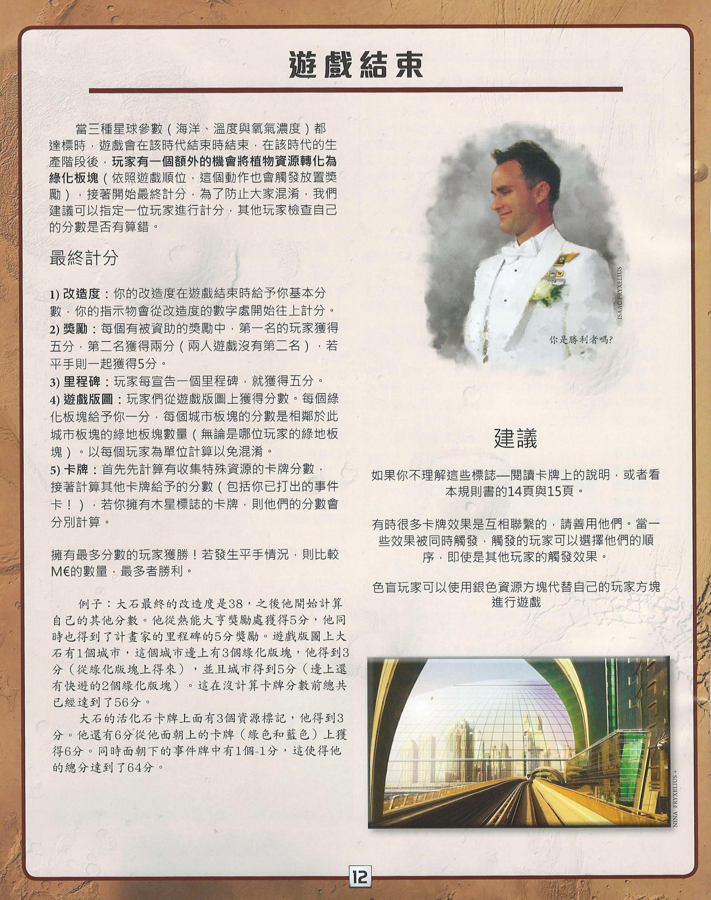
游戏结束
当三种星球参数(海洋、温度与氧气浓度)都达标时，游戏会在该时代结束时结束，在该时代的生产阶段后，玩家有一个额外的机会将植物资源转化为绿化板块(依照游戏顺位，这个动作也会触发放置奖励)，接着开始最终计分，为了防止大家混淆，我们建议可以指定一位玩家进行计分，其他玩家检查自己的分数是否有算错。
最终计分
1) 改造度:你的改造度在游戏结束时给予你基本分数，你的指示物会从改造度的数字处开始往上计分。
2) 奖励:每个有被资助的奖励中，第一名的玩家获得五分，第二名获得两分(两人游戏没有第二名)，若平手则一起获得5分。
3) 里程碑:玩家每宣告一个里程碑，就获得五分。
4) 游戏版图:玩家们从游戏版图上获得分数。每个绿化板块给予你一分，每个城市板块的分数是相邻于此城市板块的绿地板块数量(无论是哪位玩家的绿地板块)。以每个玩家为单位计算以免混淆。
5) 卡牌:首先先计算有收集特殊资源的卡牌分数，接着计算其他卡牌给予的分数(包括你已打出的事件卡!)，若你拥有木星标志的卡牌，则他们的分数会分别计算。
拥有最多分数的玩家获胜!若发生平手情况，则比较M€的数量，最多者胜利。
例子：大石最终的改造度是38，之后他开始计算自己的其他分数。他从热能大亨奖励处获得5分，他同时也得到了计画家的里程碑的5分奖励。游戏版图上大石有1个城市，这个城市边上有3个绿化版块，他得到3分(从绿化版块上得来)，并且城市得到5分(边上还有快游的2个绿化版块)。这在没计算卡牌分数前总共已经达到了56分。
大石的活化石卡牌上面有3个资源标记，他得到3分。他还有6分从他面朝上的卡牌(绿色和蓝色)上获得6分。同时面朝下的事件牌中有1个-1分，这使得他的总分达到了64分。
〔图穿白色礼服微笑男士的照片，旁有文字"你是胜利者吗?"〕
建议
如果你不理解这些标志—阅读卡牌上的说明，或者看本规则书的14页与15页。
有时很多卡牌效果是互相联系的，请善用他们。当一些效果被同时触发，触发的玩家可以选择他们的顺序，即使是其他玩家的触发效果。
色盲玩家可以使用银色资源方块代替自己的玩家方块进行游戏
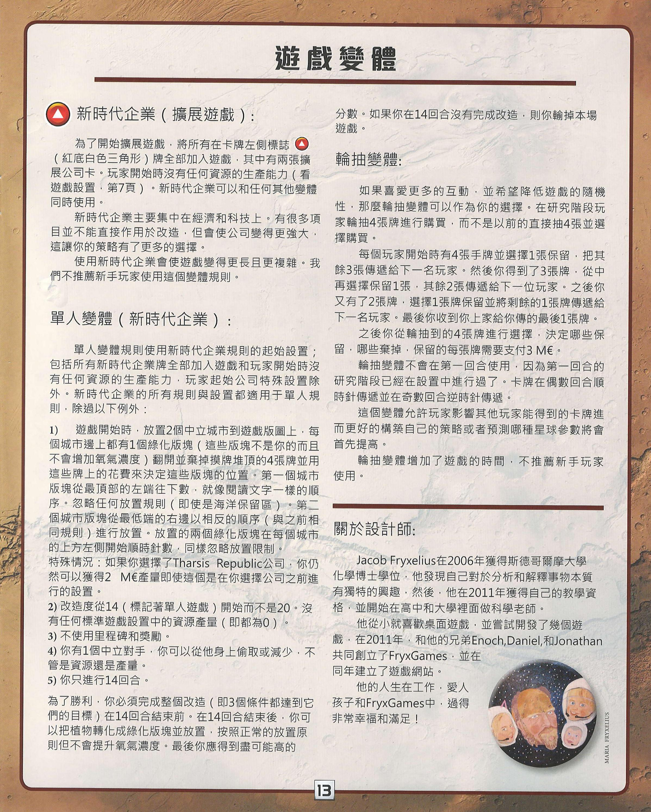
游戏变体
新时代企业(扩展游戏):
〔图标题左侧有红色圆底白色三角形图标〕
为了开始扩展游戏，将所有在卡牌左侧标志〔图红色圆底白色三角形小图标〕(红底白色三角形)牌全部加入游戏，其中有两张扩展公司卡。玩家开始时没有任何资源的生产能力(看游戏设置，第7页)。新时代企业可以和任何其他变体同时使用。
新时代企业主要集中在经济和科技上。有很多项目并不能直接作用于改造，但会使公司变得更强大，这让你的策略有了更多的选择。
使用新时代企业会使游戏变得更长且更复杂。我们不推荐新手玩家使用这个变体规则。
单人变体(新时代企业):
单人变体规则使用新时代企业规则的起始设置;包括所有新时代企业牌全部加入游戏和玩家开始时没有任何资源的生产能力，玩家起始公司特殊设置除外。新时代企业的所有规则与设置都适用于单人规则，除过以下例外：
1) 游戏开始时，放置2个中立城市到游戏版图上，每个城市边上都有1个绿化版块(这些版块不是你的而且不会增加氧气浓度)翻开并弃掉摸牌堆顶的4张牌并用这些牌上的花费来决定这些版块的位置。第一个城市版块从最顶部的左端往下数，就像阅读文字一样的顺序。忽略任何放置规则(即使是海洋保留区)。第二个城市版块从最低端的右边以相反的顺序(与之前相同规则)进行放置。放置的两个绿化版块在每个城市的上方左侧开始顺时针数，同样忽略放置限制。
特殊情况：如果你选择了Tharsis Republic公司，你仍然可以获得2 M€产量即使这个是在你选择公司之前进行的设置。
2) 改造度从14(标记着单人游戏)开始而不是20。没有任何标准游戏设置中的资源产量(即都为0)。
3) 不使用里程碑和奖励。
4) 你有1个中立对手，你可以从他身上夺取或减少，不管是资源还是产量。
5) 你只进行14回合。
为了胜利，你必须完成整个改造(即3个条件都达到它们的目标)在14回合结束前。在14回合结束后，你可以把植物转化成绿化版块并放置，按照正常的放置原则但不会提升氧气浓度。最后你应得到尽可能高的分数。如果你在14回合没有完成改造，则你输掉本场游戏。
轮抽变体：
如果喜爱更多的互动，并希望降低游戏的随机性，那么轮抽变体可以作为你的选择。在研究阶段玩家轮抽4张牌进行购买，而不是以前的直接抽4张并选择购买。
每个玩家开始时有4张手牌并选择1张保留，把其余3张传递给下一名玩家。然后你得到了3张牌，从中再选择保留1张，其余2张传递给下一位玩家。之后你又有2张牌，选择1张牌保留并将剩余的1张牌传递给下一名玩家。最后你收到你上家给你传的最后1张牌。
之后你从轮抽到的4张牌进行选择，决定哪些保留，哪些弃掉，保留的每张牌需要支付3 M€。
轮抽变体不会在第一回合使用，因为第一回合的研究阶段已经在设置中进行过了。卡牌在偶数回合顺时针传递并在奇数回合逆时针传递。
这个变体允许玩家影响其他玩家能得到的卡牌进而更好的构筑自己的策略或者预测哪种星球参数将会首先提高。
轮抽变体增加了游戏的时间，不推荐新手玩家使用。
关于设计师：
Jacob Fryxelius在2006年获得斯德哥尔摩大学化学博士学位，他发现自己对于分析和解释事物本质有独特的兴趣，然后，他在2011年获得自己的教学资格，并开始在高中和大学里面做科学老师。
他从小就喜欢桌面游戏，并尝试开发了几个游戏，在2011年，和他的兄弟Enoch,Daniel，和Jonathan共同创立了FryxGames，并在同一年建立了游戏网站。
他的人生在工作，爱人孩子和FryxGames中，过得非常幸福和满足!
〔图圆形插画，星空下穿宇航服的一家人肖像，旁有竖排署名"MARIA FRYXELIUS"〕
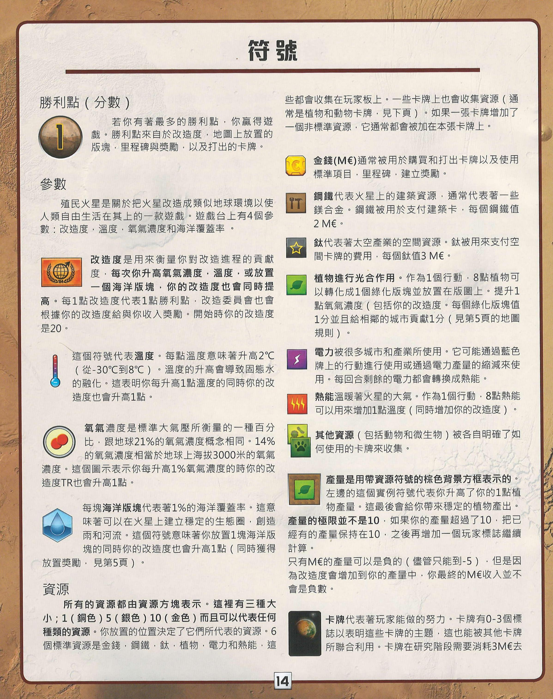
符号
胜利点(分数)
若你有着最多的胜利点，你赢得游戏。胜利点来自于改造度，地图上放置的版块，里程碑与奖励，以及打出的卡牌。
参数
殖民火星是关于把火星改造成类似地球环境以使人类自由生活在其上的一款游戏。游戏台上有4个参数：改造度，温度，氧气浓度和海洋覆盖率。
改造度是用来衡量你对改造进程的贡献度，每次你升高氧气浓度，温度，或放置一个海洋版块，你的改造度也会同时提高。每1点改造度代表1点胜利点，改造委员会也会根据你的改造度给与你收入奖励。开始时你的改造度是20。
这个符号代表温度。每点温度意味着升高2°C(从-30°C到8°C)。温度的升高会导致固态水的融化。这表明你每升高1点温度的同时你的改造度也会升高1点。
氧气浓度是标准大气压所衡量的一种百分比，跟地球21%的氧气浓度概念相同。14%的氧气浓度相当于地球上海拔3000米的氧气浓度。这个图示表示你每升高1%氧气浓度的时你的改造度TR也会升高1点。
每块海洋版块代表着1%的海洋覆盖率。这意味着可以在火星上建立稳定的生态圈，创造雨和河流。这个符号意味着你放置1块海洋版块的同时你的改造度也会升高1点(同时获得放置奖励，见第5页)。
资源
所有的资源都由资源方块表示。这里有三种大小;1(铜色)5(银色)10(金色)而且可以代表任何种类的资源。你放置的位置决定了它们所代表的资源。6个标准资源是金钱，钢铁，钛，植物，电力和热能，这些都会收集在玩家板上。一些卡牌上也会收集资源(通常是植物和动物卡牌，见下页)。如果一张卡牌增加了一个非标准资源，它通常都会被加在本张卡牌上。
金钱(M€)通常被用于购买和打出卡牌以及使用标准项目，里程碑，建立奖励。
钢铁代表火星上的建筑资源，通常代表着一些镁合金。钢铁被用于支付建筑卡，每个钢铁值2 M€。
钛代表着太空产业的空间资源。钛被用来支付空间卡牌的费用，每个钛值3 M€。
植物进行光合作用。作为1个行动，8点植物可以转化成1个绿化版块并放置在版图上。提升1点氧气浓度(包括你的改造度。每个绿化版块值1分并且给相邻的城市贡献1分(见第5页的地图规则)。
电力被很多城市和产业所使用。它可能通过蓝色牌上的行动进行使用或通过电力产量的缩减来使用。每回合剩余的电力都会转换成热能。
热能温暖着火星的大气。作为1个行动，8点热能可以用来增加1点温度(同时增加你的改造度)。
其他资源(包括动物和微生物)被各自明确了如何使用的卡牌来收集。
产量是用带资源符号的棕色背景方框表示的。左边的这个实例符号代表你升高了你的1点植物产量。这最后会给你带来稳定的植物产出。产量的极限并不是10，如果你的产量超过了10，把已经有的产量保持在10，之后再增加一个玩家标志继续计算。
只有M€的产量可以是负的(尽管只能到-5)，但是因为改造度会增加到你的产量中，你最终的M€收入并不会是负数。
卡牌代表着玩家能做的努力。卡牌有0-3个标志以表明这些卡牌的主题，这也能被其他卡牌所联合利用。卡牌在研究阶段需要消耗3M€去购买，但是从你的手牌打出则需要不同的花费。当你碰到了这个符号，这意味着你可以抓1张牌到手里并且不用支付购买费用。
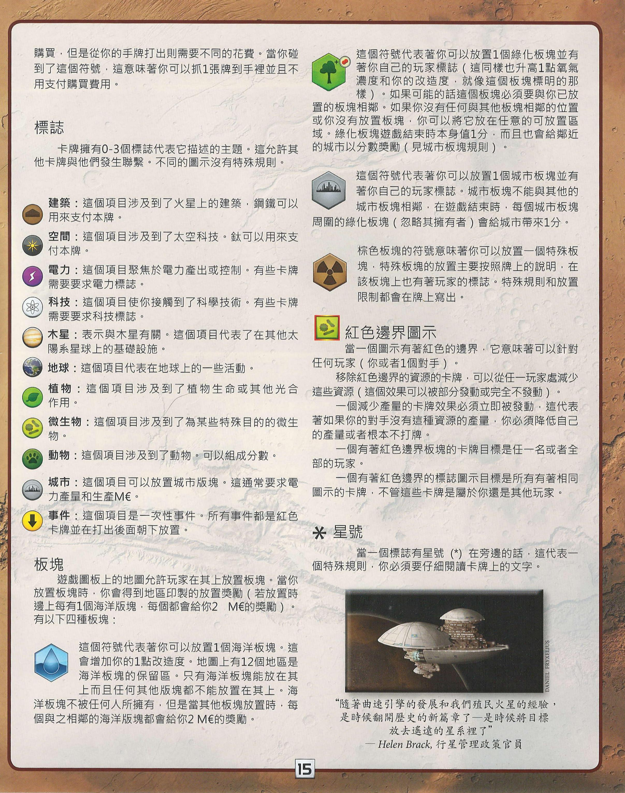
标志
卡牌拥有0-3个标志代表它描述的主题。这允许其他卡牌与他们发生联系。不同的图示没有特殊规则。
建筑:这个项目涉及到了火星上的建筑，钢铁可以用来支付本牌。
空间:这个项目涉及到了太空科技。钛可以用来支付本牌。
电力:这个项目聚焦于电力产出或控制。有些卡牌需要要求电力标志。
科技:这个项目使你接触到了科学技术。有些卡牌需要要求科技标志。
木星:表示与木星有关。这个项目代表了在其他太阳系星球上的基础设施。
地球:这个项目代表在地球上的一些活动。
植物:这个项目涉及到了植物生命或其他光合作用。
微生物:这个项目涉及到了为某些特殊目的的微生物。
动物:这个项目涉及到了动物。可以组成分数。
城市:这个项目可以放置城市版块。这通常要求电力产量和生产M€。
事件:这个项目是一次性事件。所有事件都是红色卡牌并在打出后面朝下放置。
板块
游戏图板上的地图允许玩家在其上放置板块。当你放置板块时，你会得到地区印制的放置奖励(若放置时边上每有1个海洋版块，每个都会给你2 M€的奖励)。有以下四种板块：
这个符号代表着你可以放置1个海洋板块。这会增加你的1点改造度。地图上有12个地区是海洋板块的保留区。只有海洋板块能放在其上而且任何其他版块都不能放置在其上。海洋板块不被任何人所拥有，但是当其他板块放置时，每个与之相邻的海洋版块都会给你2 M€的奖励。
这个符号代表着你可以放置1个绿化板块并有着你自己的玩家标志(这同样也升高1点氧气浓度和你的改造度，就像这个板块标明的那样)。如果可能的话这个板块必须要与你已放置的板块相邻。如果你没有任何与其他板块相邻的位置或你没有放置板块，你可以将它放在任意的可放置区域。绿化板块游戏结束时本身值1分，而且也会给邻近的城市以分数奖励(见城市板块规则)。
这个符号代表着你可以放置1个城市板块并有着你自己的玩家标志。城市板块不能与其他的城市板块相邻，在游戏结束时，每个城市板块周围的绿化板块(忽略其拥有者)会给城市带来1分。
棕色板块的符号意味着你可以放置一个特殊板块，特殊板块的放置主要按照牌上的说明，在该板块上也有着玩家的标志。特殊规则和放置限制都会在牌上写出。
红色边界图示
当一个图示有着红色的边界，它意味着可以针对任何玩家(你或者1个对手)。
移除红色边界的资源的卡牌，可以从任一玩家处减少这些资源(这个效果可以被部分发动或完全不发动)。
一个减少产量的卡牌效果必须立即被发动，这代表着如果你的对手没有这种资源的产量，你必须降低自己的产量或者根本不打牌。
一个有着红色边界板块的卡牌目标是任一名或者全部的玩家。
一个有着红色边界的标志图示目标是所有有着相同图示的卡牌，不管这些卡牌是属于你还是其他玩家。
星号
当一个标志有星号(*)在旁边的话，这代表一个特殊规则，你必须要仔细阅读卡牌上的文字。
(插图：太空船，图旁竖排署名：DANIEL FRYXELIUS)
"随着曲速引擎的发展和我们殖民火星的经验，是时候翻开历史的新篇章了—是时候将目标放去遥远的星系里了"
— Helen Brack, 行星管理政策官员